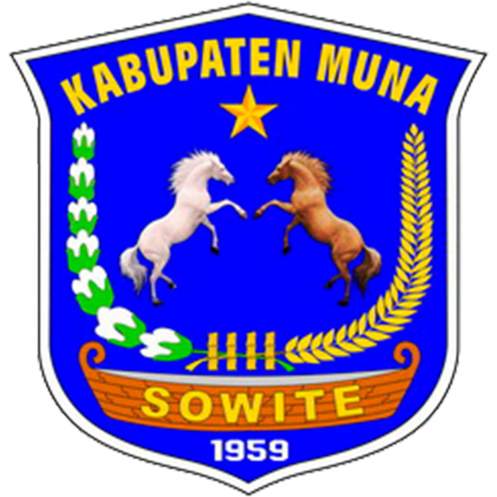

Nama Sekolah
UPTD SD Negeri 1 Towea

UPTD SD NEGERI 1 TOWEA
Belajar, Berkarya, Bertumbuh Bersama
Tahun Ajaran 2026/2027KELAS YANG KOMPAK
Website ini menjadi pusat informasi kelas, tempat siswa dan orang tua melihat profil kelas, struktur organisasi, daftar siswa, jadwal pelajaran, jadwal piket, dan pengumuman penting.
MENGENAL KELAS KITA
UPTD SD Negeri 1 Towea
3.B
La Ode Sahrun, S.Pd.
26 siswa
BERSAMA MENJADI LEBIH BAIK
Susunan pengurus kelas tahun ajaran 2026/2027.
Membantu pencatatan dan administrasi kelas.
Membantu pencatatan keuangan kelas jika diperlukan.
Azkia Nureliza Herman
Mengingatkan teman menjaga kebersihan dan menjalankan piket.
Hamzah Abdul Azis
Membantu menjaga ketertiban dan keamanan barang kelas.
Amera Bunga Riskia
Membantu merapikan buku dan menjaga pojok baca.
Sri Nadia
Membantu merapikan dan menjaga perlengkapan kelas.
| No. | Jabatan | Nama | Tugas Utama |
|---|---|---|---|
| 1 | Wali Kelas | La Ode Sahrun, S.Pd. | Membimbing siswa dan mengoordinasikan kegiatan kelas. |
| 2 | Ketua Kelas | Agis Maulana | Membantu memimpin dan menjaga ketertiban kelas. |
| 3 | Wakil Ketua | Afdal | Membantu ketua dan menggantikan saat berhalangan. |
| 4 | Sekretaris | Arsyi Mafazah | Membantu mencatat informasi dan kegiatan kelas. |
| 5 | Bendahara | Asyafa | Membantu pencatatan keuangan kelas jika diperlukan. |
| 6 | Koordinator Kebersihan | Azkia Nureliza Herman | Mengoordinasikan piket dan kebersihan kelas. |
| 7 | Koordinator Keamanan | Hamzah Abdul Azis | Membantu menjaga ketertiban dan barang kelas. |
| 8 | Koordinator Perpustakaan | Amera Bunga Riskia | Membantu menjaga dan merapikan buku. |
| 9 | Koordinator Perlengkapan | Sri Nadia | Membantu menjaga perlengkapan kelas. |
KELUARGA BESAR 3.B
Daftar nama siswa kelas 3.B.
| No. | Nama Siswa |
|---|---|
| 1 | Afdal |
| 2 | Agis Maulana |
| 3 | Ahmad Albar |
| 4 | Amera Bunga Riskia |
| 5 | Ana |
| 6 | Arsyi Mafazah |
| 7 | Asyafa |
| 8 | Azkia Nureliza Herman |
| 9 | Dahlia |
| 10 | Gunaldi |
| 11 | Hamzah Abdul Azis |
| 12 | Hasra |
| 13 | Ilman Aditia |
| 14 | Kesya Sabrina |
| 15 | Muhammad Alfan Ramadhan |
| 16 | Muhammad Al Fandi |
| 17 | Nadia |
| 18 | Nur Sakila |
| 19 | Parel |
| 20 | Pujayanti |
| 21 | Raya |
| 22 | Riana |
| 23 | Siti Fatima |
| 24 | Sitti Nur Ramadhan |
| 25 | Sri Nadia |
| 26 | Yusuf |
Demi keamanan data anak, informasi yang ditampilkan hanya nama siswa.
BELAJAR DENGAN TERATUR
Jadwal kegiatan belajar kelas 3.B, Senin sampai Sabtu.
| Jam | Waktu | Senin | Selasa | Rabu | Kamis | Jumat | Sabtu |
|---|---|---|---|---|---|---|---|
| 1 | 06.45–07.15 | Upacara Bendera | LITNUM | LITNUM | LITNUM | LITNUM | LITNUM |
| 2 | 07.15–07.50 | B. Inggris | Pendidikan Agama Islam | IPAS | Bahasa Indonesia | Muatan Lokal | Bahasa Indonesia |
| 3 | 07.50–08.25 | B. Inggris | Pendidikan Agama Islam | IPAS | Bahasa Indonesia | Muatan Lokal | Bahasa Indonesia |
| 4 | 08.25–09.00 | Pendidikan Pancasila | Pendidikan Agama Islam | IPAS | Bahasa Indonesia | PJOK | Bahasa Indonesia |
| ISTIRAHAT | 09.00–09.30 | ||||||
| 5 | 09.30–10.05 | Pendidikan Pancasila | Pendidikan Agama Islam | Seni Budaya | IPAS | PJOK | Matematika |
| 6 | 10.05–10.40 | Pendidikan Pancasila | Matematika | Seni Budaya | IPAS | PJOK | Matematika |
| 7 | 10.40–11.15 | Pendidikan Pancasila | Matematika | Seni Budaya | Kokurikuler | PJOK | Matematika |
| 8 | 11.15–11.50 | Kokurikuler | Kokurikuler | Kokurikuler | Kokurikuler | — | Kokurikuler |
Silakan cocokkan kembali jadwal ini dengan jadwal resmi dari sekolah jika ada perubahan.
KELAS BERSIH, BELAJAR NYAMAN
Pembagian petugas penyapuan dan kebersihan kelas sesuai gambar.
| Hari | Nama Siswa yang Bertugas |
|---|---|
| Senin | Afdal, Ahmad Albar, Gunaldi, Amera Bunga Riskia, Ana, Dahlia, Kesya Sabrina, Pujayanti, Raya |
| Selasa | Agis Maulana, Hamzah Abdul Azis, Parel, Arsyi Mafazah, Asyafa, Hasra, Nur Sakila, Riana, Sri Nadia |
| Rabu | Afdal, Ilman Aditia, Yusuf, Azkia Nureliza Herman, Ana, Nadia, Siti Fatima, Sitti Nur Ramadhan, Pujayanti |
| Kamis | Agis Maulana, Ahmad Albar, Muhammad Al Fandi, Amera Bunga Riskia, Arsyi Mafazah, Dahlia, Kesya Sabrina, Nur Sakila, Raya |
| Jumat | Gunaldi, Hamzah Abdul Azis, Muhammad Alfan Ramadhan, Asyafa, Hasra, Riana, Sri Nadia, Siti Fatima |
| Sabtu | Ilman Aditia, Muhammad Alfan Ramadhan, Muhammad Al Fandi, Yusuf, Azkia Nureliza Herman, Nadia, Sitti Nur Ramadhan, Parel |
Bersihkan lantai dan sudut ruangan dari sampah dan debu.
Susun meja dan kursi agar rapi dan nyaman digunakan.
Hapus tulisan setelah pembelajaran sesuai arahan guru.
Buang sampah pada tempat yang tersedia.
INFORMASI KELAS
Mari mendukung anak-anak untuk hadir tepat waktu, membawa perlengkapan belajar, menjaga kebersihan kelas, dan mengerjakan tugas dengan penuh tanggung jawab.
Siswa diharapkan melaksanakan piket sesuai jadwal dan bekerja sama agar kelas tetap bersih, sehat, dan nyaman.
Rajin belajar, saling membantu, menjaga kebersihan, dan menghormati guru.